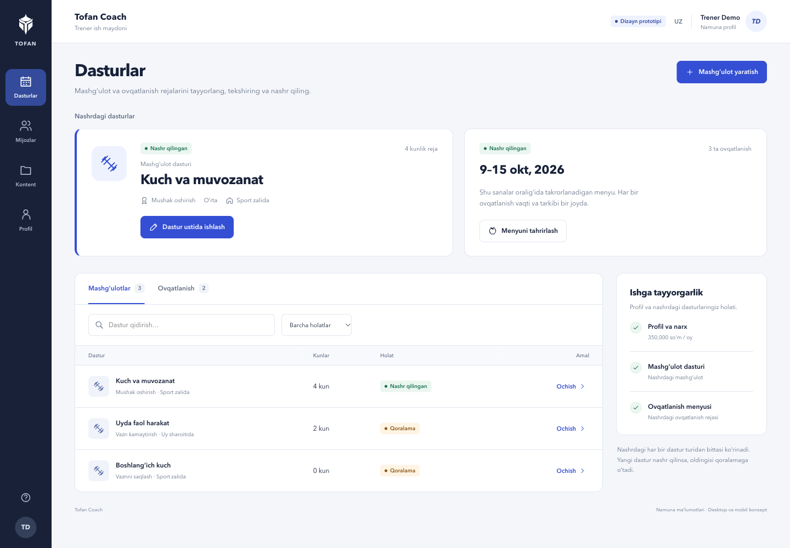

Trenerning ishiga mos ish maydoni.
Dasturlar, mijozlar va shaxsiy kontent. Desktopda yonma-yon ishlash, telefonda aniq ketma-ketlik.
Desktop ish maydoni
Interaktiv ochish


Dasturga yo‘naltirilgan tuzilma
Faol juftlik va qoralamalar ajratilgan. Desktop muharririda kunlar doim ko‘rinadi; mobil ekran bitta vazifaga qaratiladi.
API modeliga mos menyu
Ovqatlanish rejasi sana oralig‘ida takrorlanadi. Vaqt ixtiyoriy, ovqat miqdori grammda, oziq qiymatlari porsiyadan hisoblanadi.
O‘zgarishlar ustidan nazorat
Aniq Saqlash, saqlanmagan o‘zgarishdan chiqish tasdig‘i, xatoda qoralama saqlanishi va nashrdagi dastur almashtirilishi.